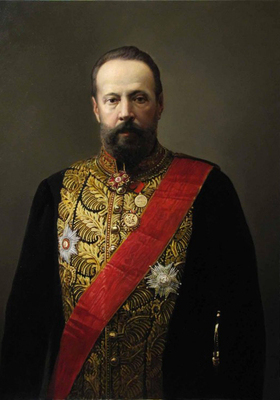

Сергей Витте
1849-1915
Биография
Сергей Юльевич Витте (1849–1915) — выдающийся государственный деятель Российской империи, министр путей сообщения, министр финансов, председатель Совета министров. Один из ключевых реформаторов в экономической сфере конца XIX — начала XX века.
Добился введения в России «золотого стандарта», привлёк иностранные инвестиции и стимулировал рост российской промышленности, поощрял инвестиции в железнодорожное строительство (в том числе Великий Сибирский путь).
Деятельность Витте привела к резкому ускорению темпов промышленного роста в Российской империи. Благодаря его реформам в России начался промышленный подъем, увеличились объемы внешней торговли, была создана современная банковская система.
Основные достижения
- Выступал за торговые переговоры с Германией, заключил выгодный для России 10-летний торговый договор с этой страной (1895)
- Введение винной монополии (с 1897)
- Введение «золотого стандарта» (1897)
- Строительство Транссибирской магистрали
- Разработка и реализация программы индустриализации России